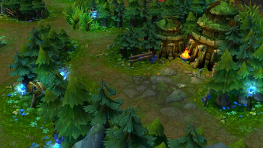

|  |
A Selva |
|
Entre as rotas, fica a selva, uma expansão repleta de monstros neutros. Esses monstros não atacam a base inimiga, mas podem ser derrotados para se obter Ouro e efeitos temporários. Um jogador pode assumir o papel de caçador da selva e usar essas áreas como sua principal fonte de recursos. Caçadores da selva geralmente vagam entre as rotas, ajudando os aliados quando necessário. |